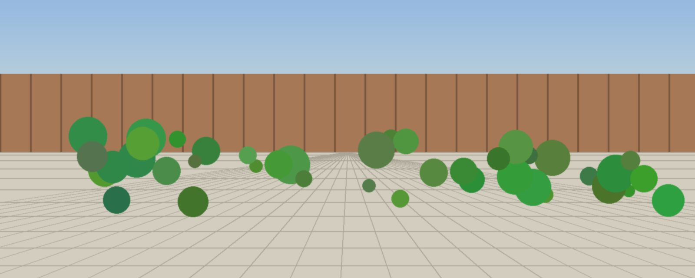
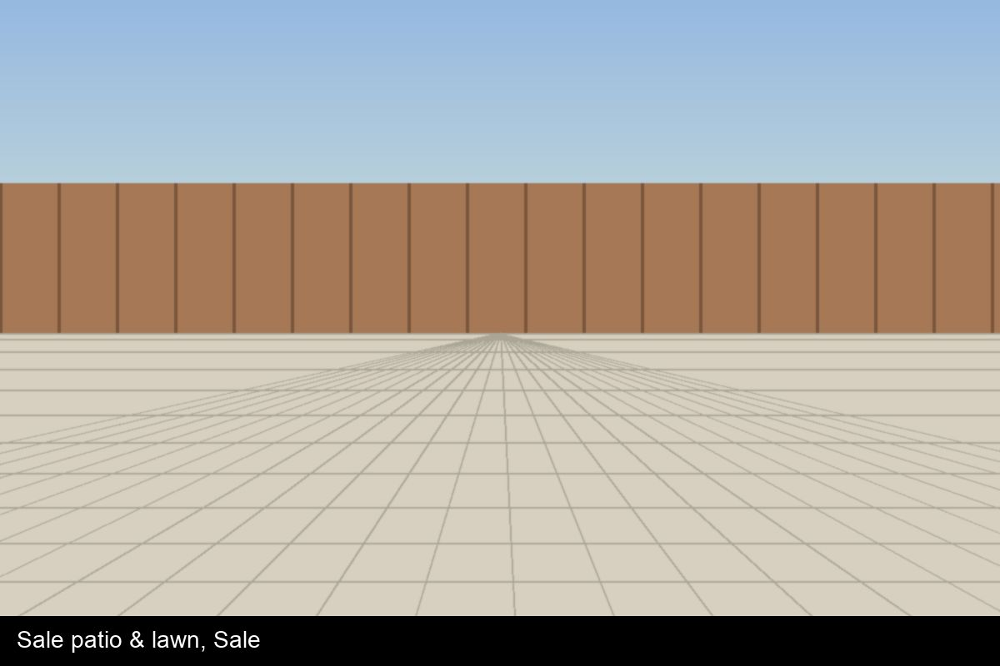
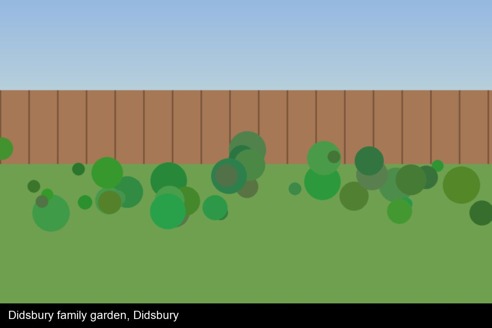
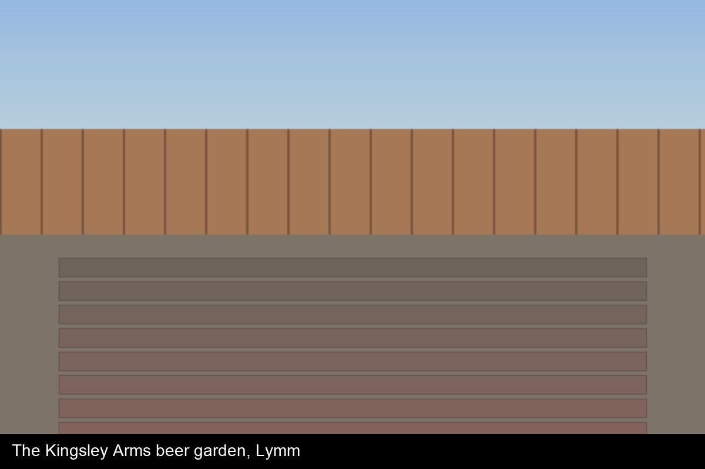

Garden design & build across Cheshire and South Manchester
Fernhollow is an award-winning garden design and build company based in Knutsford, Cheshire. Since 2014 we have designed, built and looked after gardens across Cheshire and South Manchester - from compact courtyards to full landscape transformations, commercial grounds and new-build plot landscaping. Two build crews, a design studio and a maintenance team, all in-house.
What we do
- Garden design (concept, masterplan, planting plans, 3D visuals)
- Garden design & build
- Hard landscaping: porcelain, natural stone, block paving, resin bound
- Decking, pergolas and garden rooms
- Fencing, gates and boundary walls
- Drainage and groundworks
- Garden lighting and irrigation
- Planting and lawns
- Commercial grounds and new-build plot landscaping
- Garden maintenance and aftercare contracts
See all our services and typical prices
Recent projects

Sale patio & lawn
Sale · 2026
A tired lawn and cracked concrete patio replaced with a grey 600x600 porcelain terrace, a new lawn and crisp aluminium edging. Built in five days....

Didsbury family garden
Didsbury · 2026
A family garden with a Raj Green sandstone patio, new closeboard fencing and side gate, a lawn for football and colourful, robust borders....

The Kingsley Arms beer garden
Lymm · 2026
A complete beer-garden rebuild: Kandla Grey sandstone terrace, raised composite deck with festoon lighting, slatted cedar screens and planters. Delive...
How we work
- Free call - Tell us about your garden, your budget and your timing. We'll be straight with you about whether we're the right fit.
- Design consultation & survey - We visit, measure and survey levels, access, drainage and services.
- Design & proposal - You receive a design, a fixed-price proposal broken down by section, and a programme.
- Build - Your own site lead, a weekly update and a project page with photos. 25% deposit, then stage payments.
- Handover & aftercare - A walk-round, a snag list, a handover pack and a 12-month plant / 5-year workmanship guarantee.
What our clients say
“From first sketch to the last plant, the team were tidy, on time and genuinely cared.”
- The Mehta family, Sale
Read more reviews · 4.9 stars from 127 Google reviews
Accredited and insured
BALI Registered Contractor · Marshalls Register (accredited installer) · CHAS · Constructionline Silver · TrustMark
Where we work
Cheshire East, Trafford, South Manchester, Warrington - roughly 25 miles from Knutsford.
Meet the team or read our story.